一、核心脈絡：從形容詞堆砌轉向模組化版面設計
許多生圖作品缺乏設計感，因為提示詞只堆疊畫風形容詞，沒定義圖層關係、視覺動線與文字佔位。模型抓不到空間骨架，畫面就會平鋪直敘，撐不起商業海報要傳達的資訊層級。
這 18 組由創作者「我是龐德」授權的提示詞，示範了如何用模組化結構控制版面。每組指令都包含五個層級：主體錨定、空間構圖、文字排版、光影色階與材質參數。套用時，你只要替換「參考圖片人物」、「主題」和標題文字，就能沿用原本的版面骨架。
二、底層機制：五大風格系列的版面語法與實戰指令
這 18 組提示詞分成五大系列，涵蓋文字空間化、混合媒體拼貼、網格控制、資訊層級與字體遮罩。創作者透過前景遮擋、材質顆粒和明度對比，把單純的生圖指令變成有編輯感的平面作品。
1.1 日系海報｜超大字體電影感海報
這組指令適合用來做個人品牌主視覺或活動海報。做法是讓前景超大字體與人物服裝同色，再用人物與文字的前後遮擋拉出空間深度。
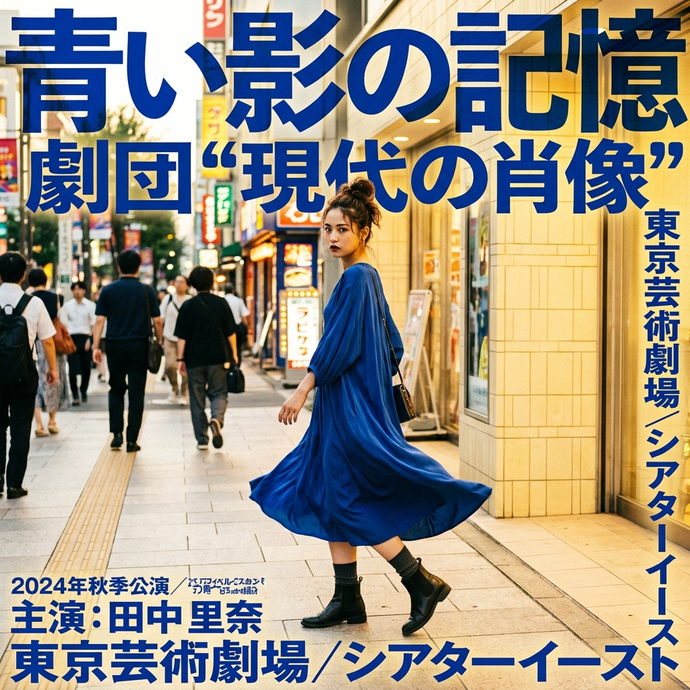
MIDJOURNEY / CHATGPT PROMPT 複製提示詞
參考圖片人物，一幅現代日本戲劇海報設計。畫面呈現街頭攝影風格，背景是東京街頭的人行道，配有溫暖的奶油黃色瓷磚牆面和商店櫥窗。畫面中央焦點清晰，一位扎著高髮髻的時尚日本年輕女子正轉身回眸，目光銳利地直視鏡頭。她穿著優雅寬鬆的寶藍色長裙，裙子隨動作飄逸擺動，腳穿著深灰色襪子和黑色短靴。在最前景處，大膽疊加了一個覆蓋整個畫面的超大版式設計框架，由巨大的寶藍色「我是龐德」繁體字構成。這些大號文字的顏色與她身上的藍色長裙完美呼應。右上角整齊排列著小巧精緻的紅白配色活動資訊文字。明亮的街頭自然光投射出逼真的陰影，色彩呈現豐富的高調（high-key）風格，整體堪稱電影感與先鋒平面設計相結合的傑作。--ar 9:161.2 日系海報｜3D 立體文字包圍人物
這組結構把文字變成三維空間（3D）裡的實體方塊，讓人物蜷縮在文字包圍的狹窄空間中。一點透視加上側向陰影，直接拉出都市喜劇與內心拉扯的張力。
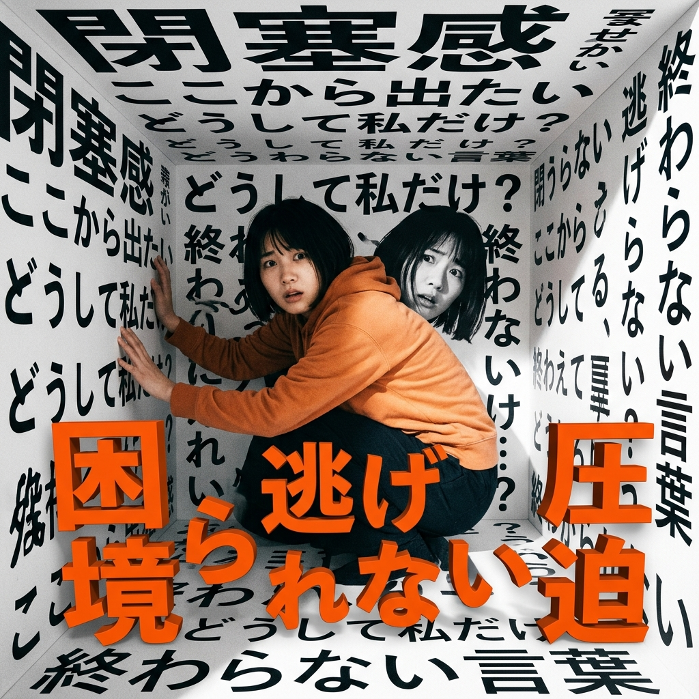
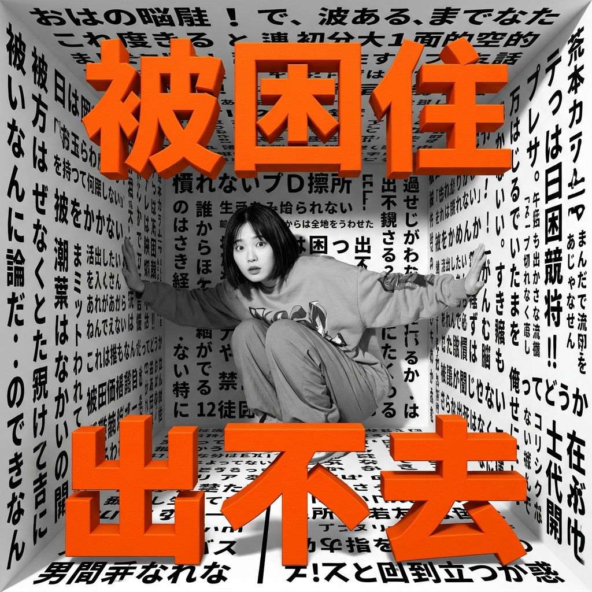
MIDJOURNEY / CHATGPT PROMPT 複製提示詞
參考人物圖片。姿態與困境：她被困在一個由文字組成的狹小、封閉的立方體空間（Box/Room）中央，身體呈現被迫蜷縮、蹲坐的姿態，雙手張開試圖撐住兩側牆面，眼神直視鏡頭，帶著一絲驚慌與無奈。巨大文字元素：畫面最前方漂浮著一組巨大的、立體（3D）且粗厚的橘黃色「我是龐德」繁體字體。字體巨大到幾乎與人同高，以不規則的角度立體地環繞在女性周圍。藝術風格：日本當代排版主義海報（Contemporary Japanese Typographic Poster），將「文字」轉化為三維空間的物理實體與核心視覺道具。超現實幽默喜劇風（Surreal Whimsical Comedy Style），透過誇張的字體比例、幽默的受困姿態，傳達出強烈的都市喜劇與內心小劇場氛圍。鏡頭構圖：中央聚焦與一點透視，四周牆面、天花板與地板向中央匯聚，形成強烈的包圍感。最前景：巨大的3D橘黃色立體字體，帶有明顯的厚度。中景（焦點）：蜷縮在正中央的女性主角。背景：密密麻麻寫滿黑色日文平面字體的立方體內部空間。光影：整個白色文字方塊空間內部光線充足，前景巨大橘黃色立體字具有明顯的側向光源，在字體自身厚度結構上留下深色陰影，彷彿隨時會壓向主角。色調：純白色空間為底，密麻的黑色字體鋪滿牆面，前景鮮明高飽和度橘黃色字體形成強烈對比。3D字體呈現微微的啞光塑料或泡沫塑膠質感。情緒氛圍：被資訊與思緒淹沒、滑稽、內心掙扎（Overwhelmed, Whimsical, Trapped, Chaotic）。2.1 混合媒體｜前衛時尚雜誌拼貼
這組拼貼把寫實人像疊上高飽和幾何圖案、半色調網格與日英文排版，做出時尚雜誌封面效果。強烈的紅橘色塊加上底片顆粒，讓單張影像立刻有平面編輯的層次。
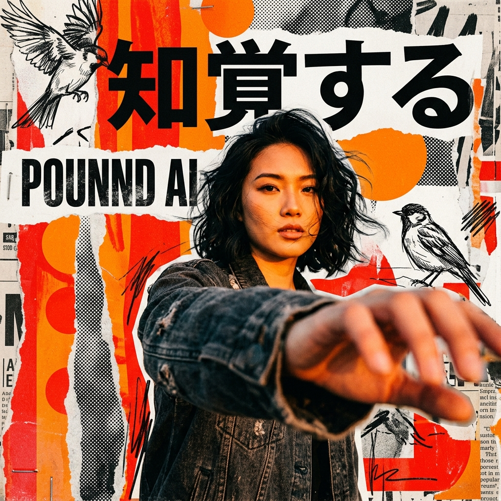
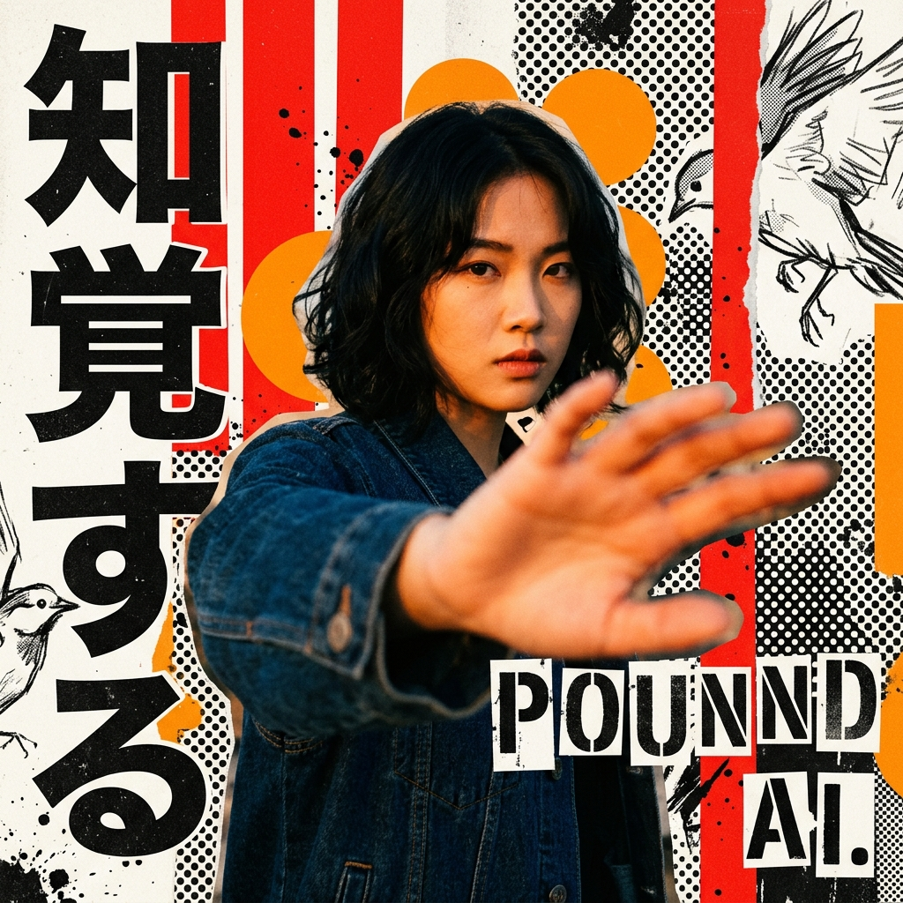
MIDJOURNEY / CHATGPT PROMPT 複製提示詞
A Mixed media collage artwork featuring a young Asian woman with short wavy black hair, wearing a dark denim jacket, looking directly at the camera. One hand is stretching out dramatically towards the camera, creating an intense foreshortening and dynamic motion blur effect. The background is a graphic poster design combining high-saturation red vertical bars, bright orange circles, black and white halftone patterns, and sketchy illustrations of birds. The layout includes bold typography with Japanese text "知覺する" and English words "POUNND AI." Warm sunset lighting accents her face, creating a cinematic mood. Avant-garde fashion editorial style, magazine cover aesthetics, vintage film grain texture, 35mm lens photography --ar 3:42.2 混合媒體｜綜藝節目普普漫畫海報
這組指令把真人照片漫畫化，並加上速度線、分鏡格、亮粉色背景與貼紙裝飾。整體節奏熱鬧，適合做娛樂感強的社群視覺。
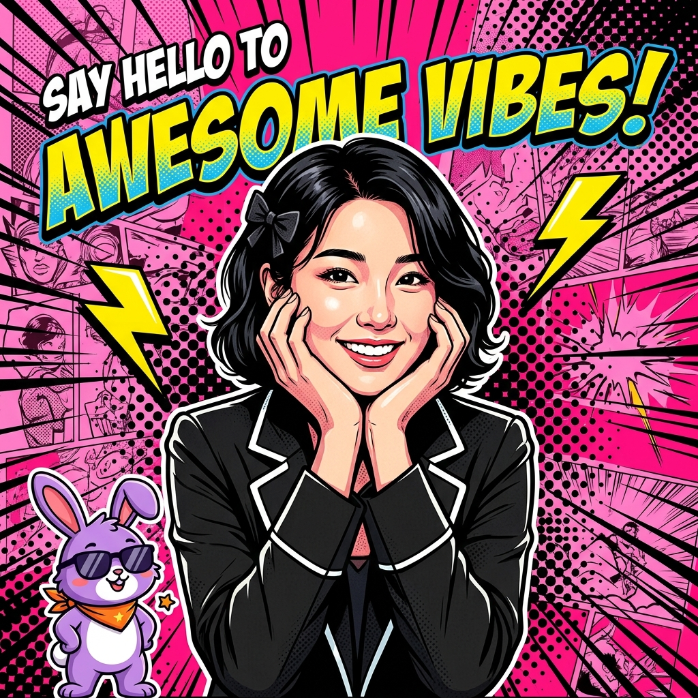
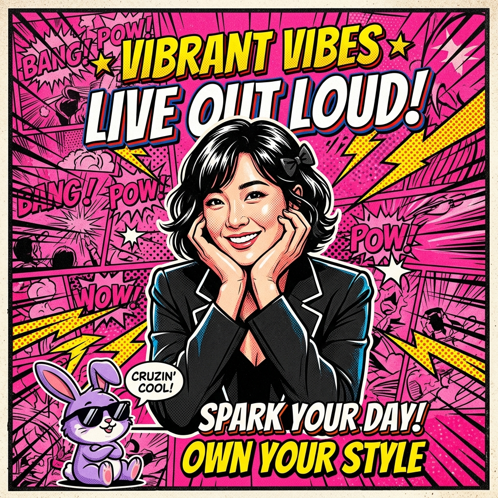
MIDJOURNEY / CHATGPT PROMPT 複製提示詞
採用漫畫普普藝術風格的商業海報，比例為 9:16。參考圖片中的真實女性，留著波浪短髮，頭上別著一個精緻的黑色蝴蝶結髮夾。她面帶溫暖微笑，雙手托腮，穿著一件飾有明顯白色滾邊的黑色休閒西裝外套。背景使用充滿活力的亮粉色，疊加黑白漫畫分鏡格、復古半色調點陣圖案（Halftone）、動感速度線，以及亮黃色閃電圖案，營造出誇張、熱鬧的視覺節奏。畫面左下角加入一隻戴著太陽眼鏡的可愛紫色卡通兔子，作為綜藝節目感的視覺亮點。標題文字為「我是龐德」，採用粗黑輪廓線，帶有像貼紙一樣的白色鏤空邊框。文字色彩明亮，混合粉紅色、黃色與紅色，與背景形成高對比。這是一張高對比度的綜藝節目風格海報，結合真實人物攝影與平面圖形插畫，呈現動感、活潑、專業又帶有娛樂感的視覺效果。--ar 9:162.3 混合媒體｜台灣特色旅遊拼貼
這組拼貼融合剪貼簿美學、手繪炭筆、粗體色塊與台灣地標，把九份、駁二和霓虹燈招牌收進同一個畫面，呈現旅遊雜誌專題質感。
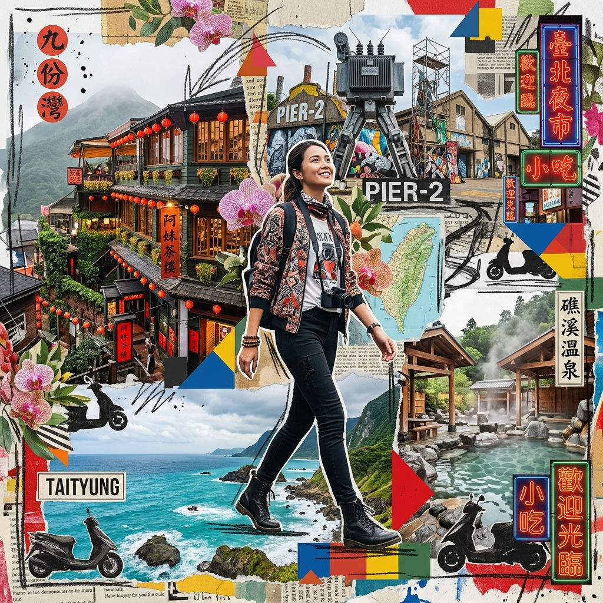
MIDJOURNEY / CHATGPT PROMPT 複製提示詞
參考圖片中人物，一張精緻的台灣混合媒體旅遊圖。一位穿著現代街頭服飾的時尚遊客在超現實拼貼中探索。視覺元素包括：九份的阿妹茶樓、高雄駁二的工業藝術美學、台東的太平洋海岸線，以及宜蘭的溫泉。風格採用「剪貼簿」美學，融合分層照片、手繪炭筆線條與粗體幾何色塊。包含蘭花、機車剪影與繁體中文霓虹燈招牌。具有高級時尚雜誌質感，色彩鮮豔，層次豐富。2.4 混合媒體｜Y2K 日系少女雜誌拼貼
這組千禧年（Y2K）少女雜誌拼貼，結合了拍立得、柯達膠卷邊框、手繪白貼紙粗邊與綠色標籤。畫面重現 2000 年代早期數位相機的清新復古感。
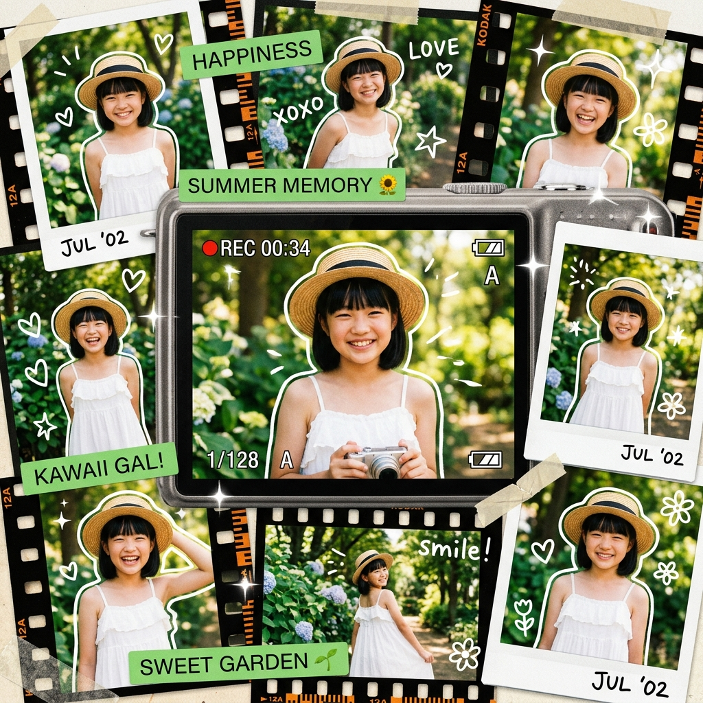
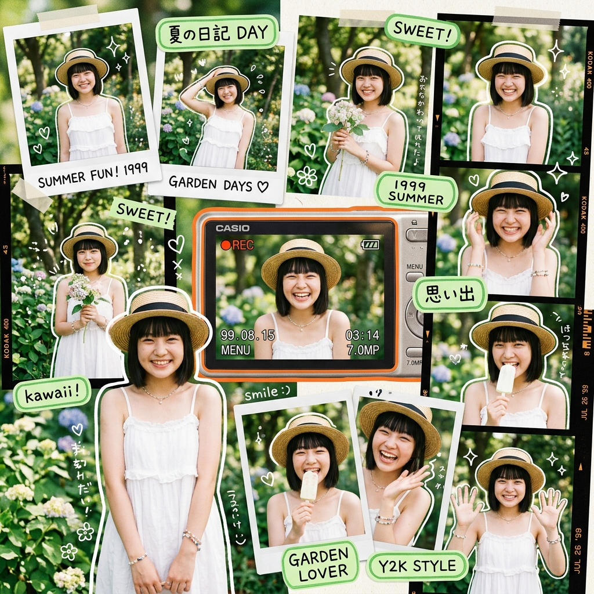
MIDJOURNEY / CHATGPT PROMPT 複製提示詞
風格與排版：Y2K日系少女雜誌風，剪貼簿多圖拼貼（Scrapbook collage），拍立得與柯達膠卷邊框，人物邊緣帶有手繪白色貼紙粗輪廓線。畫面中央疊加一個復古數位相機螢幕的顯示畫面。畫面上點綴著綠色標籤文字貼紙、可愛手繪愛心與白色閃爍星星特效。主體與服裝：參考圖片主體人物，留著黑色齊瀏海短髮，眼神清澈微笑。身穿白色細肩帶荷葉邊連身裙，頭戴裝飾有黑色緞帶的草編平頂帽。環境與光影：背景為夏日綠意盎然的花園與樹木，陽光明媚，柔和的自然光，整體呈現清新的底片與2000年代復古數位相機質感，高畫質。格式3:42.5 混合媒體｜旅行 Vlog 貼紙封面
這組指令以街頭旅行照為底，疊加數位貼紙、粉筆白邊輪廓與泡泡字體。成品明亮活潑，適合當作 YouTube 影音日誌（Vlog）或短影音（Reels）封面。
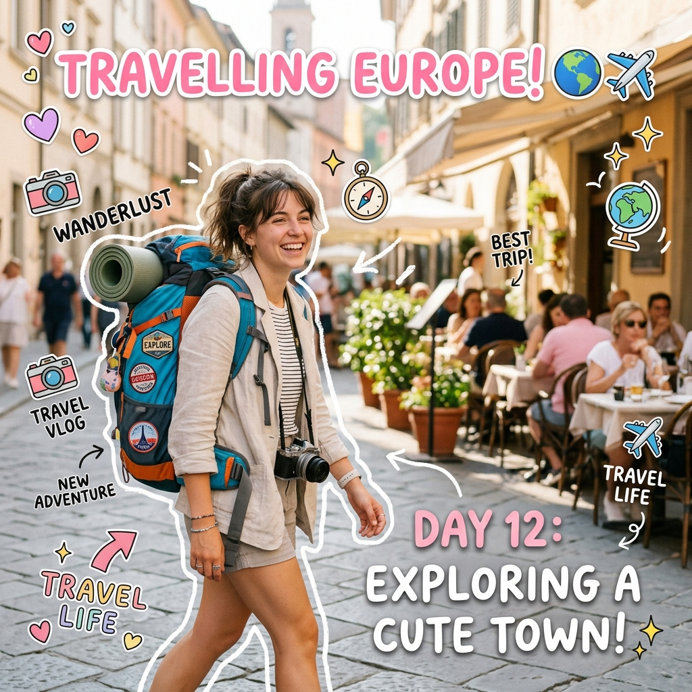
MIDJOURNEY / CHATGPT PROMPT 複製提示詞
參考圖片人物，一張年輕女旅行者背著大背包走在陽光明媚的街道上的高品質照片，搭配「卡哇伊」風格的數位貼紙和手繪插畫，風格類似社交媒體旅行vlog的封面。明亮的自然光線，柔和的戶外咖啡館背景。疊加元素包括色彩鮮豔的泡泡字體、可愛的愛心、相機圖示以及人物周圍的白色粉筆風格輪廓線。整體色調明亮柔和。2.6 混合媒體｜復古拍立得牆面
這組提示詞把多張重疊的拍立得快照釘上臥室牆面，搭配類柯達色調與細微漏光。畫面像是從懷舊時尚日記裡撕下來的生活紀錄。
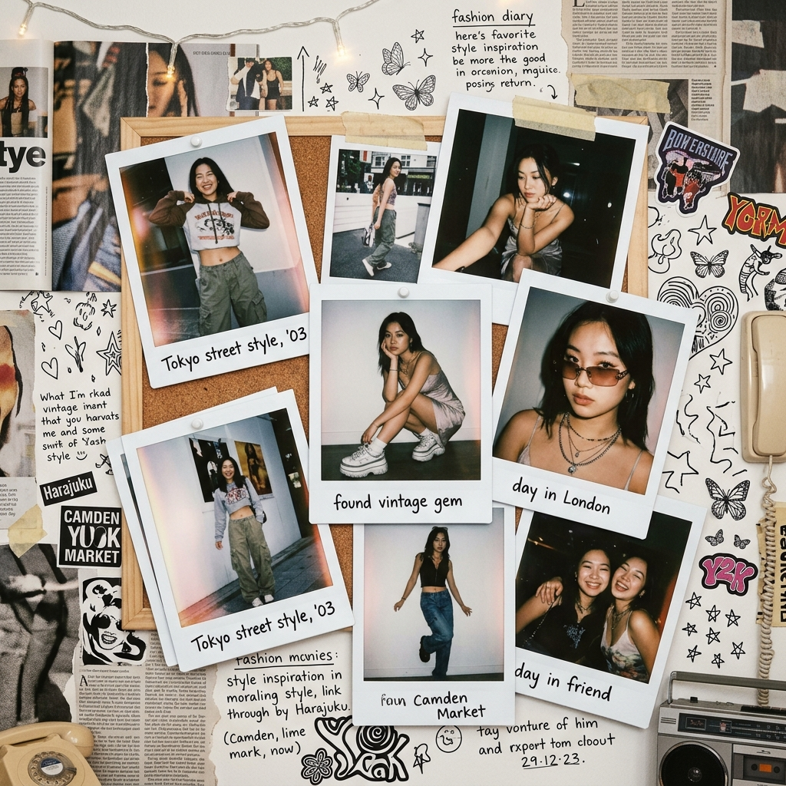
MIDJOURNEY / CHATGPT PROMPT 複製提示詞
超寫實的Y2K時尚社論，完全由別在臥室牆上的重疊拍立得照片組成，風格如同懷舊的全球時尚日記。參考圖片亞洲美女模特兒出現在多張即時顯影膠卷快照中，從不同的角度、情緒和抓拍姿勢中捕捉，營造出跨越時間的動感和個性感。有些拍立得照片略微傾斜，隨意疊放並自然重疊，形成了一種生活化的美學。環境感覺像是一個復古的創意工作室臥室，充滿了報紙質感、撕下的雜誌剪報、手寫的時尚筆記、塗鴉、貼紙 and 磨損的紙膠帶細節。自然閃光燈攝影，真實的即時顯影膠片瑕疵，細微的漏光，類柯達色彩分級，柔和的顆粒感。一種夢幻、懷舊又現代的時尚美學，感覺全球通用、高端社論且在視覺上極具吸引力。模特兒在所有畫面中始終穿著奶油色圖案短上衣、寬鬆破洞牛仔褲和格子運動鞋。3.1 網格排版｜手繪塗鴉九宮格
這組版型圍繞主角生成多格拼貼，再疊上粗細不均的白線塗鴉與短字標記。均勻的白邊分隔加上輕微膠片顆粒，讀起來像一頁生活手帳。
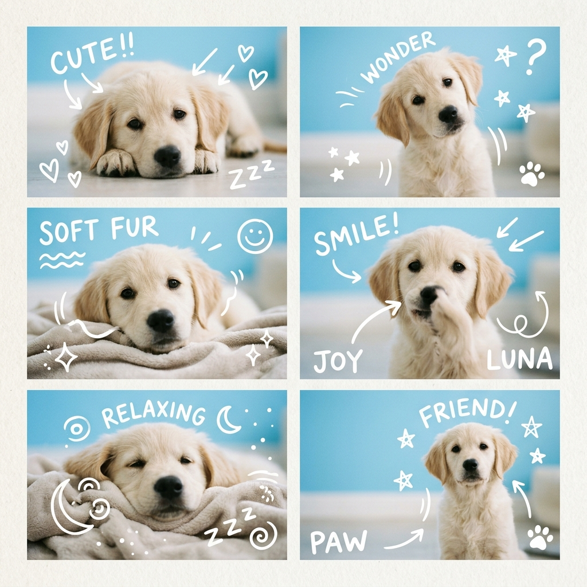
MIDJOURNEY / CHATGPT PROMPT 複製提示詞
圍繞任意主題物件產生一組連續分格拼貼，讓核心內容在每個小畫面中以近距離、輕鬆、可親的狀態出現，畫面之間用均勻白邊分隔，形成像生活速寫簿一樣的節奏。每個格都保留真實影像的柔和質感 and 輕微膠片顆粒，主體不必端正擺拍，而是透過不同角度、表情、遮擋、手勢、局部裁切或主題動作製造變化；在真實畫面上疊加厚度不均的近白手繪線描，線條像隨手畫上去的塗鴉，圍繞著主體邊緣、頭頂、手部、道具輪廓和空白區域延展，生成主題派生的小圖標、情緒符號、短促手寫詞和誇張輪廓，使現實內容被二次註釋，第一眼讀到的是清爽分格與手繪覆蓋的俏皮互動。背景保持簡潔、淺亮、通風，留出足夠乾淨空白承接線條；文字若出現，只作為鬆散手寫節奏和情緒標記，字距不齊、筆觸圓潤，不承擔說明書式信息。色彩從主題本身的材質、情緒和敘事中提取，映射為大面積高明度乾淨底色、柔和低飽和主體色、清晰明暗結構、少量主題強調色與近白信息線，保持明亮輕快、清透潔淨的視覺感受；強調色只在關鍵小物、符號或手繪節點上點到為止，整體避免厚重、環境陰影，讓每格鏡頭啟用。本次角色主角：參考圖1中的狗狗。格式4:33.2 網格排版｜可愛白線塗鴉九宮格
這組指令讓主角在九個等距分格中擺出不同動作，再用高明度的白色手繪線條串聯動作軌跡，維持畫面清爽。
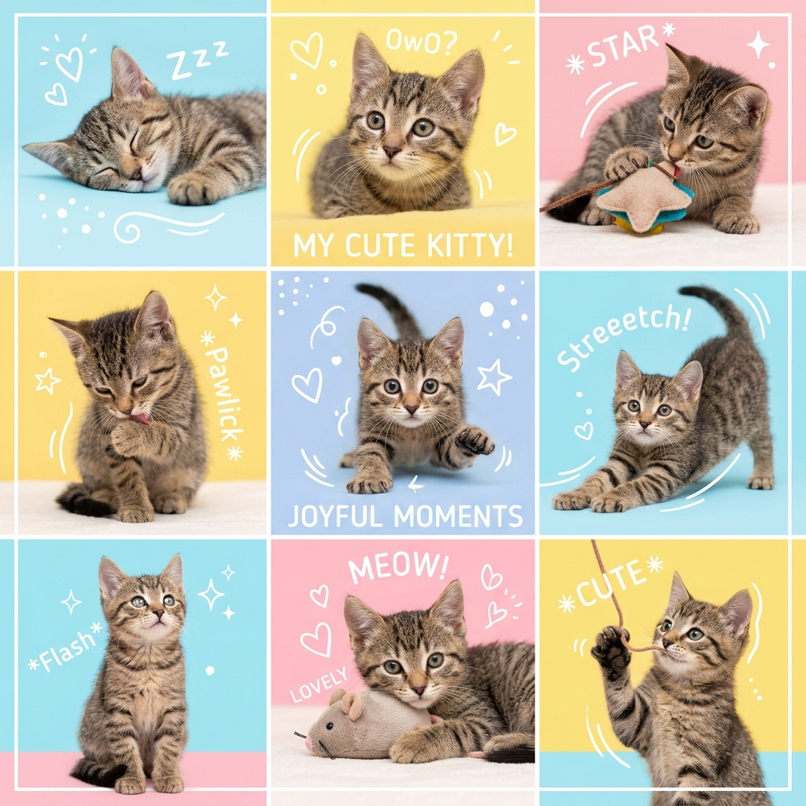
MIDJOURNEY / CHATGPT PROMPT 複製提示詞
圍繞任意主題物件產生一組九宮格照片式拼貼，讓同一主題主角在九個等距分格中以不同狀態連續出現，畫面第一眼讀到的是輕快、明亮、像手帳塗鴉一樣被重新「點亮」的生活瞬間。每一格都保留真實攝影感與自然光，主體佔據清晰視覺中心，姿態、角度和遠近有節奏變化，背景保持開闊、乾淨、空氣感強，分格之間用細白邊形成清爽秩序。以高明度白色手繪線條作為貫穿全圖的核心圖形機制：線條圍繞主體輪廓、手勢、動作軌跡和背景空處生長，形成愛心、弧線、閃光、波紋、短線、氣泡、簡短擬聲字或主題派生符號；這些塗鴉要像現場隨手畫上去，卻與主體動作準確呼應，既強調表情和動作互動，也強調表情與動作互動。色彩從主題本身的材質、環境和情緒中提取，保持大面積明亮通風底色、主體中等明度色塊、少量清晰強調色與白色訊息線條的角色關係；整體高明度、飽和度清爽、冷暖關係乾淨，情緒明亮輕快、清透有活力，避免沉悶、復古灰黃或渾悶暗調。最終效果應像一組被統一白線塗鴉串聯起來的主題記憶切片，真實、親近、活潑，九格各自成立又共同形成連續的視覺節奏。3.3 網格排版｜黑白高對比時尚 3x3 網格
這組高對比黑白時尚肖像網格，用 JSON（JavaScript 物件表示法）結構鎖定臉部特徵與九種姿態變化，確保九宮格裡的主角長相一致。
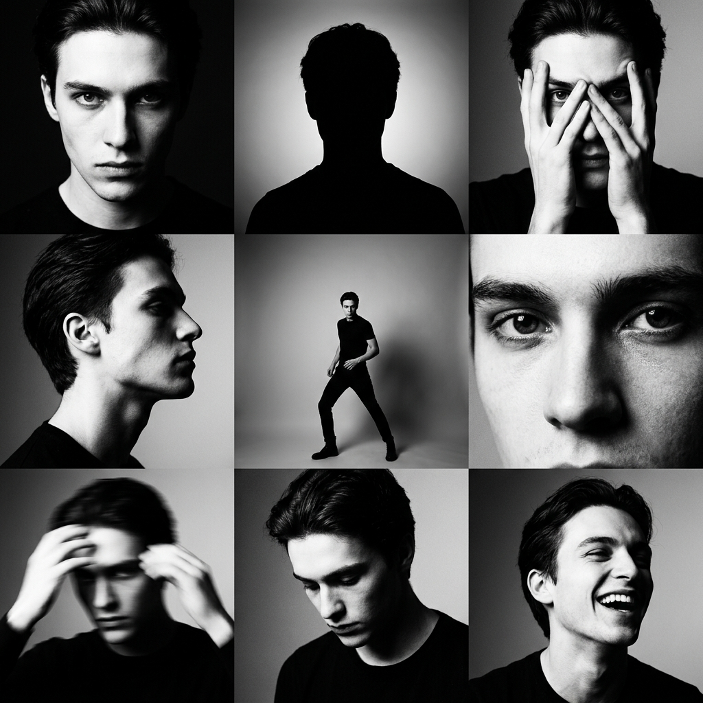
MIDJOURNEY / CHATGPT PROMPT 複製提示詞
{
"Objective": "Create a 3x3 grid photo collage with high contrast black and white aesthetics",
"FaceReference": {
"Mode": "Strict face preservation",
"Instruction": "Use uploaded reference for exact facial features",
"Consistency": "Face identical across all nine frames"
},
"GridComposition": {
"Layout": "3x3 grid",
"PoseVariety": [
"Intense direct stare",
"Silhouette backlit",
"Hands covering face peek",
"Profile strong jaw",
"Full body power stance",
"Eyes only close-up",
"Motion blur",
"Contemplative downward",
"Laughing candid"
]
},
"PersonaDetails": {
"Subject": {
"Type": "Same as reference",
"Wardrobe": "Simple black turtleneck",
"OverallPresence": "Timeless, artistic"
}
},
"Environment": {
"Setting": "Minimal studio",
"Background": "Grey gradient or geometric",
"Lighting": {
"Style": "Dramatic directional",
"Quality": "Hard shadows, extreme contrast"
}
},
"ImageQuality": {
"Resolution": "8K black and white",
"Details": "Fine art grain",
"Aesthetic": "Irving Penn/Avedon portrait"
},
"NegativePrompt": [
"color",
"flat lighting",
"different face",
"altered facial features"
],
"ResponseFormat": {
"Layout": "3x3 grid",
"AspectRatio": "1:1"
}
}3.4 網格排版｜AI 網紅大頭貼（1 主圖 + 8 小圖）
這組韓系極簡拼貼以 1 張中央大自拍照為核心，周圍環繞 8 張不同姿勢的小快照，營造自然的日常抓拍感。
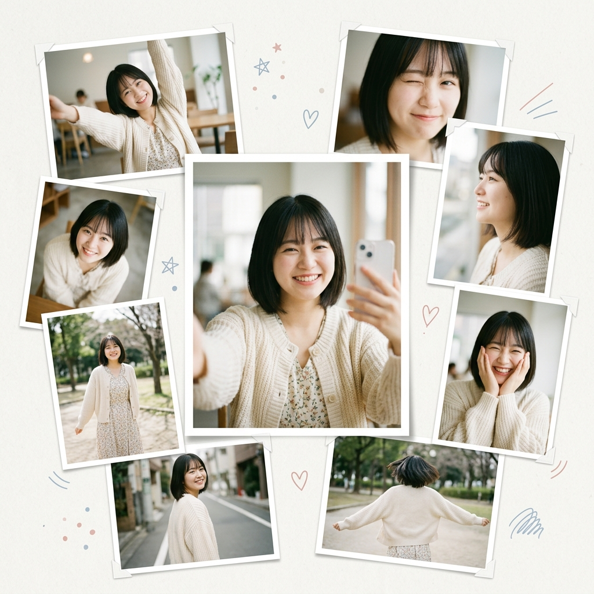
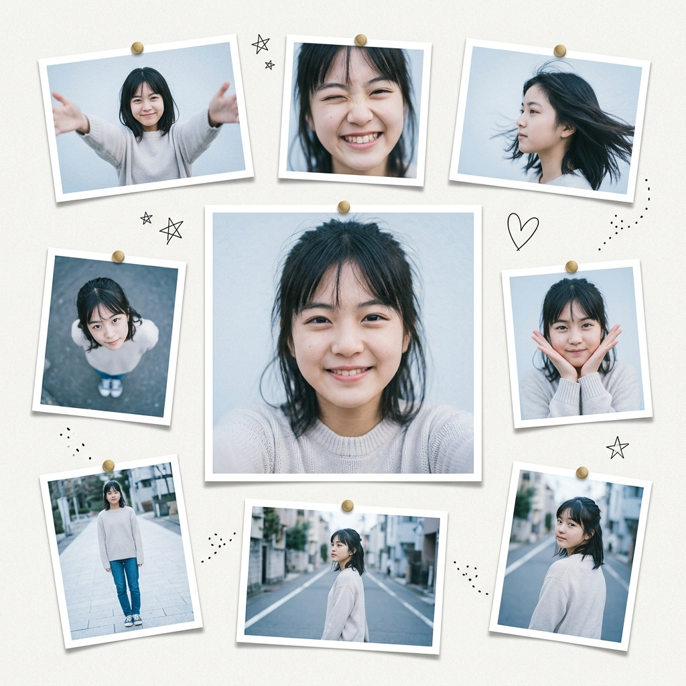
MIDJOURNEY / CHATGPT PROMPT 複製提示詞
【風格】豎幅3:4，INS韓版極簡拼貼風照片海報。背景使用淺色紙張或輕微褶皺紙質感，乾淨柔和，留白充足。
【主圖】畫面中央放置一張人物對鏡頭的自拍照，人物形象參考@Image1，主圖面積最大，表情俏皮鬆弛，具日系雜誌感的自然神態。
【小圖佈局】主圖周圍嚴格固定環繞八張小尺寸照片，數量必須為八張，不得多或少。八張小圖尺寸皆小於主圖，各自對應的姿勢如下：手伸向鏡頭的衝擊感構圖、wink特寫、側臉、俯拍效果、捧臉大頭照、自然站姿、走動抓拍、側身回頭。小圖可有輕微旋轉、疊壓、錯位，邊緣可帶有白邊、極細描邊或淡淡陰影。照片之間保持適度留白與呼吸感，緊湊但不擁擠，排列看似隨意但整體平衡有序。八張小圖中的人物皆使用@Image1的形象，臉部特徵保持一致。
【人物姿態與神情】所有照片中人物姿勢、角度、景別、神態均有變化，可看鏡頭也可不看，體現日常抓拍的真實感。表情自然鬆弛，神態或無辜或俏皮或搞怪或安靜微笑，風格偏向INS生活感、韓系淡顏氛圍。所有人物肢體必須完整、比例正常，禁止出現手指缺失、多指、手臂扭曲、腿部變形、頭部錯位等任何身體崩壞情況。
【服裝】白色上衣，藍色牛仔褲，無配件。
【色調】整體淡藍色系為主，柔和乾淨，低飽和度，帶有輕微膠片感或韓系濾鏡氛圍。
【裝飾元素】畫面上散佈少量手繪細線條塗鴉（如波浪線、圓圈、箭頭等），以及極簡風格的星星或愛心圖案，數量克制，分佈自然，不可雜亂，強化韓版手帳或雜誌排版感。禁止出現任何文字、短句或數字。
【負向提示】禁止八張小圖數量偏差，禁止小圖尺寸大於或等於主圖，禁止對稱構圖，禁止人物比例失調，禁止手指變形、多指、缺指，禁止姿勢僵硬，禁止表情單一或無變化，禁止身體部位缺失或扭曲，禁止過度裝飾導致畫面雜亂，禁止出現文字或數字元素。4.1 活動展覽｜風神音樂祭像素海報
這張海報用損壞液晶螢幕的像素斷裂感做標題，搭配高對比建築鋼骨特寫與 45 度冰晶黃斜切色塊。明確的字級落差把時間、地點與主辦單位分開，讓活動資訊一目了然。
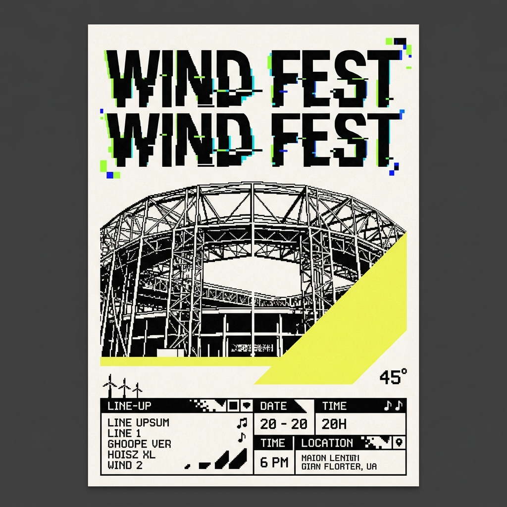
MIDJOURNEY / CHATGPT PROMPT 複製提示詞
頂部標題：字體選用具點矩陣感的像素體。後製處理：文字水平切成三段，進行輕微左右位移，並在斷裂邊緣填入螢光綠（#00FF41）與電光藍（#00E0FF）的極小像素塊，模擬損壞的液晶螢幕。主體影像：新竹縣立體育場鋼骨結構局部特寫，黑白高對比風格，移除群眾喧囂，只留建築肅穆感。位於畫面中心偏上，被下方斜向色塊承托。結構底板：冰晶黃（#E6FF00）幾幾何色塊，45度角從右下角切入，疊加在黑白影像之上，讓部分建築鋼骨紋理透出螢光色。文字資訊排版：副標「風之覺醒」使用極細線框方括號；日期「2026/06/27 - 06/28」採Helvetica Bold，字級最大；地點「新竹縣立體育場」大字，下方「新竹縣竹北市福興東路一段1號」小字加大字間距；左下角「Social: @windtopfest」，右下角「Presented by Bamboo Crew」全大寫垂直排列。4.2 活動展覽｜埃及木乃伊展像素海報
這組指令把低像素積木字體、高對比考古黑白攝影與 15 度斜切淺沙黃色塊拼在一起，同時做出展覽檔案感與現代版式。
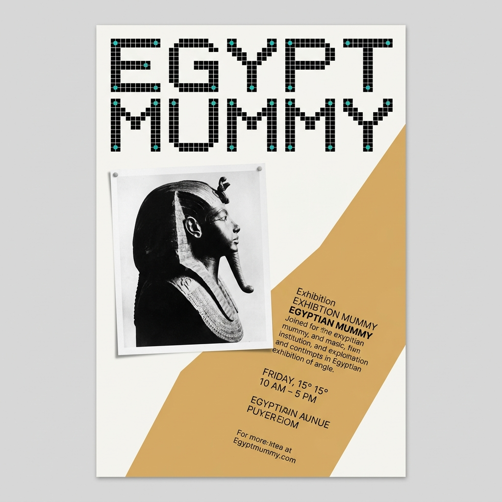
MIDJOURNEY / CHATGPT PROMPT 複製提示詞
頂部：巨大黑色字塊橫跨畫面頂部「埃及木乃伊險」，字體由微小方塊堆疊而成，帶低像素切割感。在「險」字右側斷裂處、「埃」字轉角嵌入極小面積的亮綠松石色（Turquoise）像素點，暗示古老文明在現代數位檔案中的存在感。主體：畫面中上部偏左，極高對比黑白攝影，呈現木乃伊側影或法老面具輪廓，邊緣裁切平整，像被精密剪裁貼在白紙上的考古檔案。結構：畫面右側至底部，淺沙黃色（Sandy Ochre）幾何色塊以15度角斜向穿過畫面，承載所有文字信息，對左側黑白圖像形成擠壓感。文字資訊：日期「2026/6/18 - 2026/9/28」採粗壯無襯線體；地點「[ 國立歷史博物館 ]」置於方括號細線框中；下方「展覽票價：單人票$500」字間距拉大；底部留一道極窄淺灰帶，放置模擬條碼或檔案編號符號。色彩：背景紙張白（Off-white），結構色淺沙黃，文字100%純黑，強調色極小面積亮綠松石。4.3 活動展覽｜城市清新日曆問候圖
這組日系透明桌曆排版用細長手寫字搭配一條貫穿畫面的金細線，適合用來做早安圖或城市節慶問候。
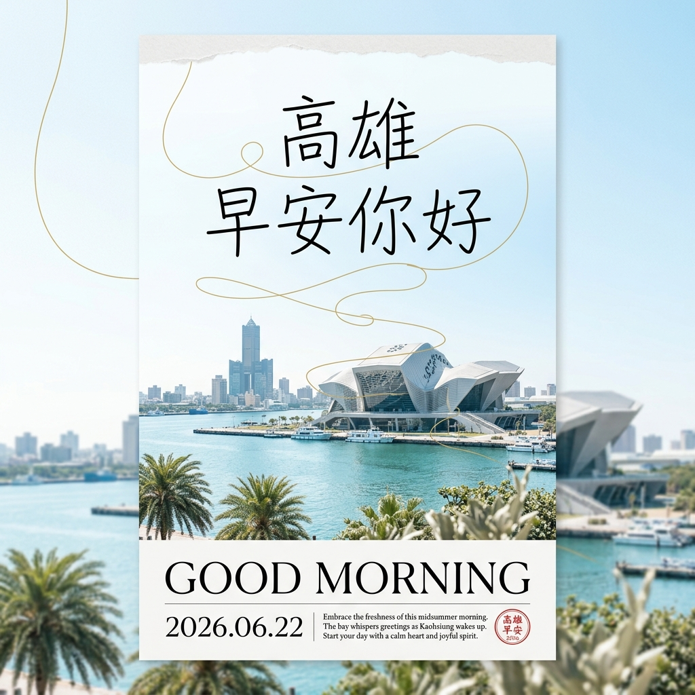
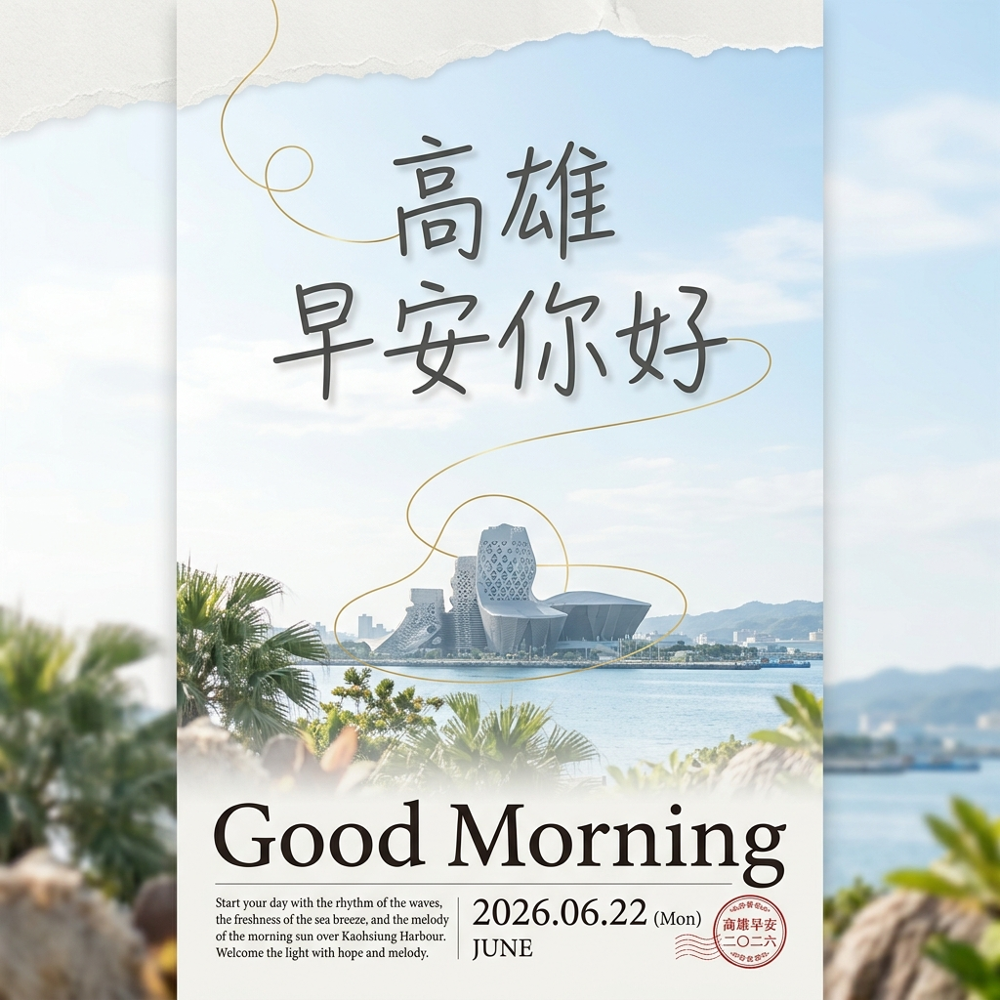
MIDJOURNEY / CHATGPT PROMPT 複製提示詞
A bright, transparent daily desk calendar style poster, ratio 9:10. Theme: Kaohsiung Music Center morning greeting, June 22, 2026. The composition is airy and high-key. At the top, the Chinese characters「高雄」and「早安你好」are written in a tall, slim, relaxed handwritten style with plenty of white space, offsets, and breathing room. A single, slender gold line enters from the edge, winds gracefully around the text and the distant Kaohsiung Music Center building, as if threading the air together. The Kaohsiung Music Center building is a small, distinct architectural subject in the mid-lower section of an open coastal background. Foreground features slightly blurred tropical plant textures for depth. The bottom contains a structured information area: large elegant serif English 'Good Morning', the date '2026.06.22', a brief passage of fine-print text, and a small circular red seal stamp. Colors are clean sky blue, brilliant white, and soft architectural grays with transparent shadows. Top edge has subtle torn paper textures. The mood is ritualistic, quiet, and fresh.5.1 字體海報｜鏤空字體海報（畢業季主題）
這組結構把「畢業季」三個大字當作景框，讓建築紋理與海面從鏤空筆劃中透出來。人物再從字劃間走出來，形成前後穿插的立體層次，適合做展覽或紀念海報。
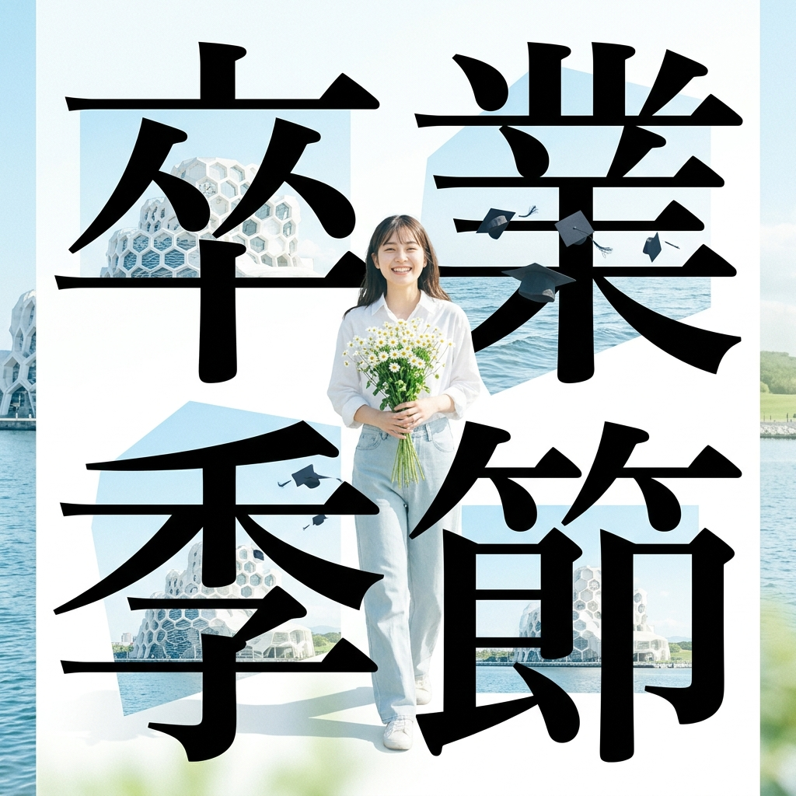
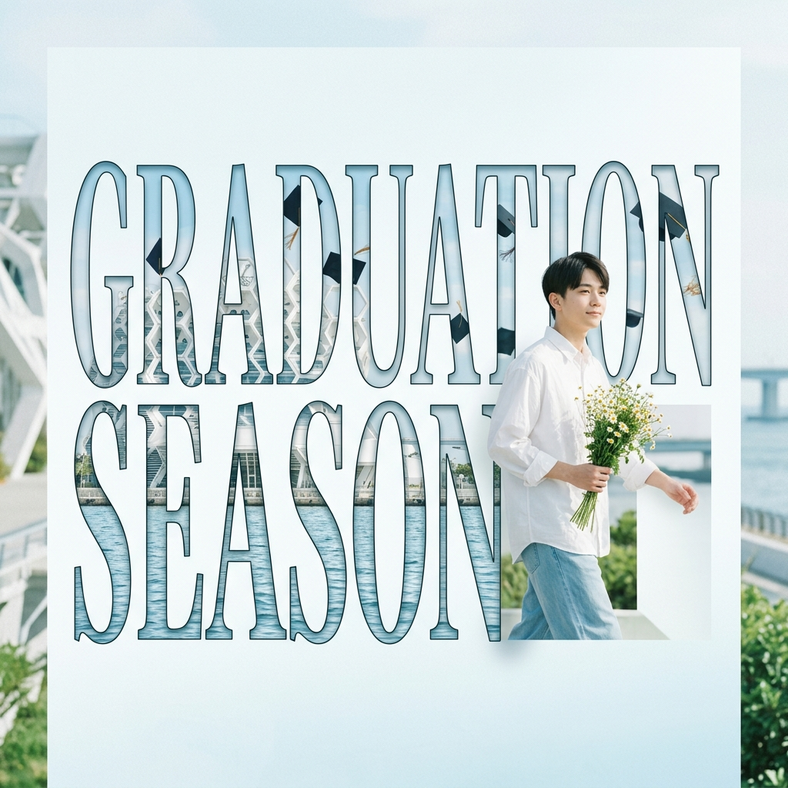
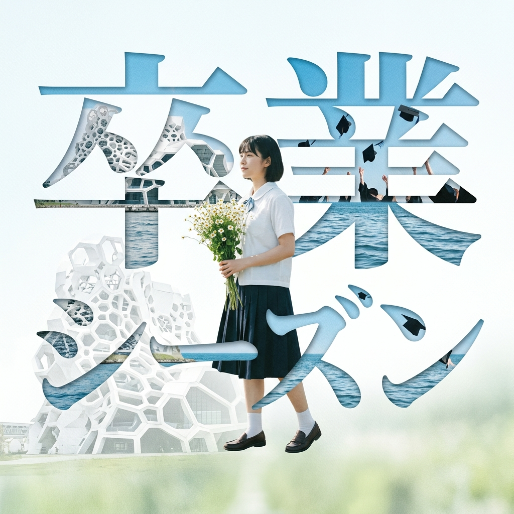
MIDJOURNEY / CHATGPT PROMPT 複製提示詞
視覺設計構想：日式清透 × 建築幾何。核心大字（結構骨架）：字體選用具有人文氣息的日式粗明體（Mincho）或粗壯但邊角圓潤的黑體。「畢業季」三個大字以鏤空形式佔據畫面中心。文字內部景象：呈現高雄流行音樂中心獨特的白色六角形蜂巢建築紋理、愛河灣波光粼粼的海面、以及在海風中飛揚的學士帽剪影。主體人物（層次穿插）：一位著裝乾淨、日系鹽系風格的成年畢業生，懷抱一束淡色系的洋桔梗或洋甘菊。人物從「畢」字的筆劃中向觀者走來，身體部分遮擋字體邊緣，產生強烈的「從文字中浮現」的立體感。光線採用日系的「高調自然光（High-key）」，帶有輕微的過曝感，顯得清新而富有朝氣。色彩與質感：主色調：蘇打藍（海與天）、純淨白（KMC建築）、輕盈的草綠。強調色：畢業生花束的淡黃色 or 粉色，作為情感焦點。質感：保留細膩的紙張纖維感或極輕微的膠片顆粒，邊緣銳利，畫面極度乾淨。5.2 字體海報｜字體壓制主體海報
這組指令用超大粗重字塊直接壓住近距離主體，逼著視線從筆劃縫隙裡尋找表情與材質細節，做出強硬的編輯部出版感。
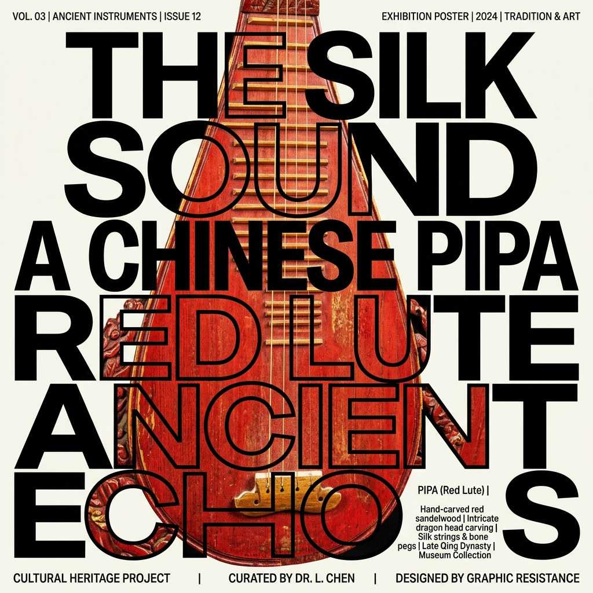
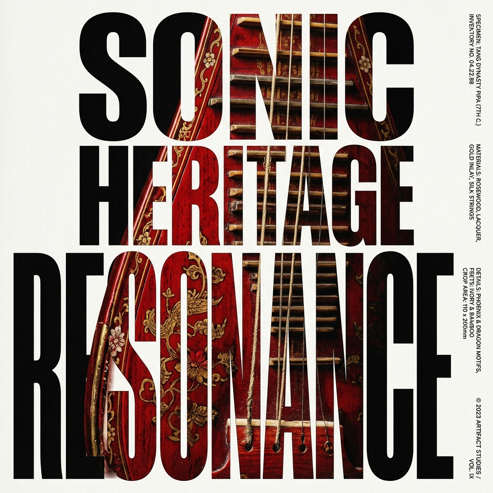
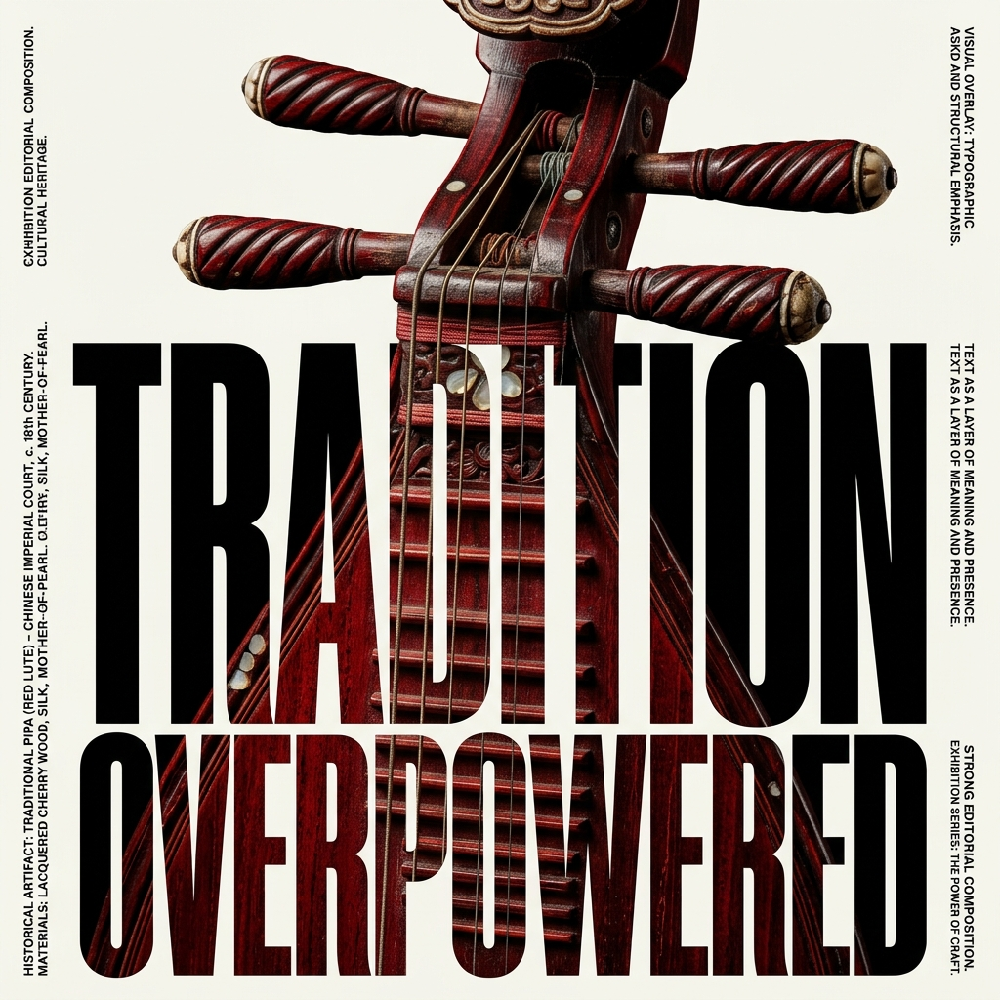
MIDJOURNEY / CHATGPT PROMPT 複製提示詞
上傳一張圖片當參考，圍繞任意主題物件產生一張強圖形編輯感影像：主體物件以近距離真實影像主形體出現，被放大到幾乎貼近觀看者，局部被邊界切斷，最有情緒或最能代表主題的細節位於視覺中心；畫面疊加一組極粗、極大的標題或主題符號，讓字形既是發資訊層也是遮擋層，拉扯筆畫穿過、壓住主體。主要閱讀順序先看到巨大抽象字塊的重量，再在字形縫隙中發現主題主形體的關鍵表情、材質或結構，右側或邊緣保留安靜空場，放置少量細小正文式信息，形成大聲標題與低聲註釋的節奏反差。色彩從主題本身的材質、情緒和敘事語境中提取，映射為大面積明亮乾淨底色、清晰深色結構、低飽和影像層和小面積資訊強調色；保持高明度留白、冷靜清透、乾淨色階和明確明暗階梯，深色必須清澈有力，淺色必須通風潔淨，避免臟灰、煙熏、復古泛黃或濁覆蓋。整體質感應像嚴肅出版物與公共海報之間的混合：黑白攝影感或主題派生的克制影像質地、硬邊幾何字形、精確排版、緊張留白、強烈圖底關係，最終讓主題被文字結構重新組織成一種有壓迫感但清醒、克制、可記憶的視覺聲明。主題：大喬，將長寬比設為 9:165.3 字體海報｜神像造像信息海報
這組版型把傳統神像轉譯成幾何網格與高密度平行細線，結合木雕肌理與建築製圖筆觸，跳脫常見的宗教插畫語彙。
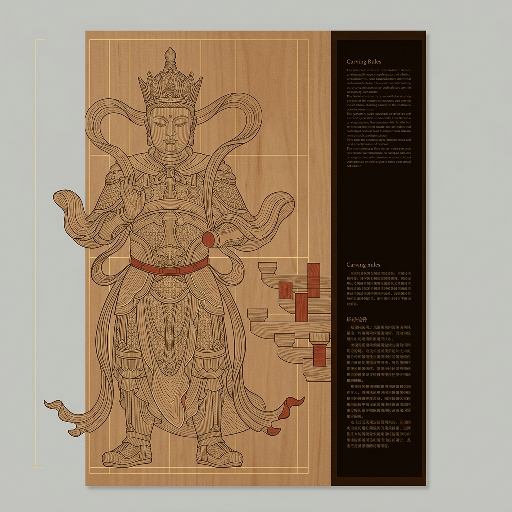
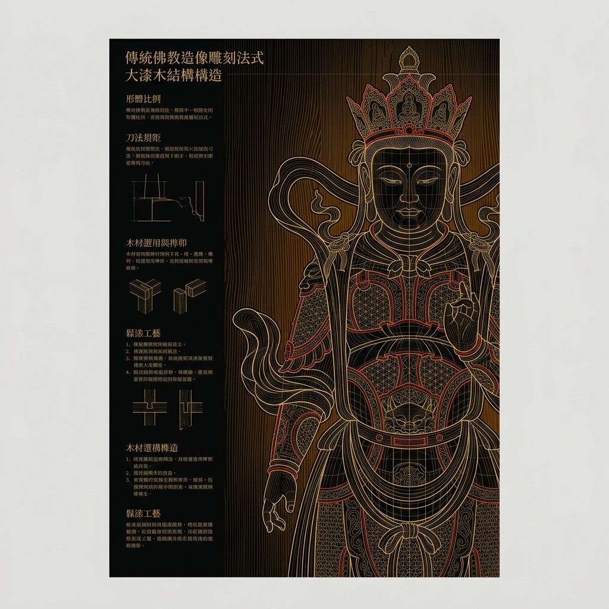
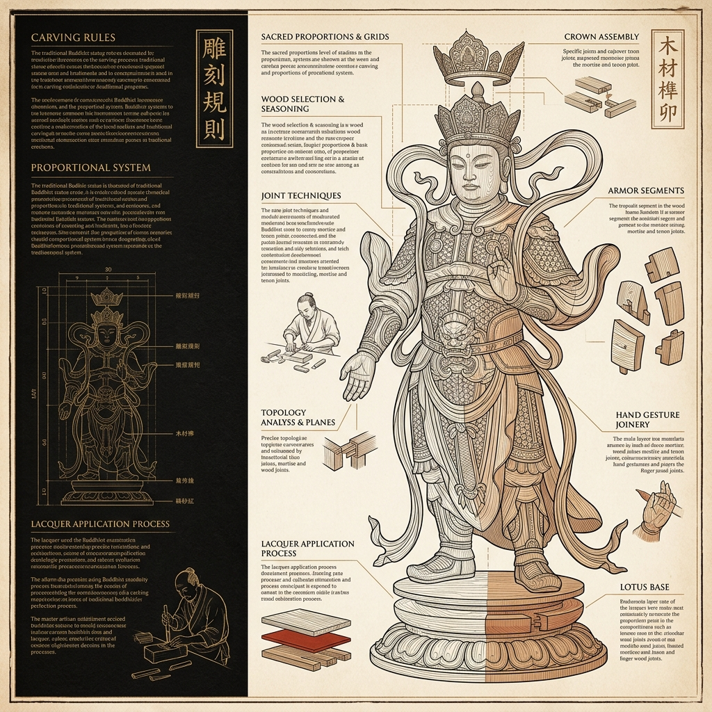
MIDJOURNEY / CHATGPT PROMPT 複製提示詞
圍繞著「傳統神像造像藝術與木料解構」主題生成一張冷靜、精密、具有東方秩序感的信息海報：把圖中神像（冠冕、法器、甲胄與飄帶的結合體）轉譯成巨大的線描主形體，讓主形體像被層層剖開的木雕原材體積、漆線雕的鱗甲陣列、混天綾（飄帶）的拓撲曲面、面部「開臉」的幾何比例網格與法器構件互相咬合，佔據畫面主要視覺重量；一側保留大塊深色負空間作為資訊場，標題（如：造像法度／軀體的拓撲）、日期、雕刻師／造像主、木材與大漆參數說明文字以細窄字重分級排布，行距克制，形成清晰閱讀路徑。主體邊緣要有強烈裁切感，宛如極具張力的飄帶弧線或尖銳的槍尖／乾坤圈局部伸入訊息場又被暗場切斷，產生影像與留白互相嚙合的張力；內部使用大量高密度平行細線（模擬木材的天然肌理與底漆打磨痕跡）、重複短豎線（模擬金甲的微觀陣列與植髮的接縫）、層疊輪廓線（模擬神像軀體與衣褶的三維等高線放樣）和微小間隔，呈現像建築製圖、白描底稿與現代建築製圖的混合質感。色彩從神像自身的漆木材質與法器鑲嵌中提取：保留大面積結構暗場（深邃的大漆黑或沉澱的暗琥珀色）、明亮乾淨的主形體（原木的溫潤本色與白描的米白）、清晰高明度線條（貼金工藝的亮金或白描的銀灰）、低飽和輔助層和極少強調色的角色關係（從法器提取一抹極純的硃砂紅，或寶石的翠綠），暗部要純淨有深度，亮部要清透鋒利，整體情緒冷靜、莊重、理性而不灰臟。文字不是裝飾，而是與主形體共同構成節奏和尺度；畫面絕對避免普通宗教插畫的敘事（剝離香火氣與寫實的具象面龐，轉化為幾何與結構的理性質感），追求高密度線性細節（造像工藝的微觀宇宙）、強烈正負形對抗、精確排版和安靜但壓迫感很強的視覺記憶。三、結構對比：五層提示詞模組與模型選型矩陣
這 18 組提示詞能維持設計感，關鍵在於把版面拆成五個固定層級。透過下表的任務與變數對照，你可以直接找出生成失誤的來源，精準調整對應的參數。
| 結構層級 | 核心任務 | 可替換變數範例 | 常見失誤 |
|---|---|---|---|
| 1. 主體與墊圖錨定 | 鎖定人物五官、服裝或產品外觀 | 參考圖片人物 URL、@Image1、姿態與視線 |
未附參考圖或 --iw 權重過低，導致臉部隨機生成 |
| 2. 構圖與版面骨架 | 決定視角、景深與分格邏輯 | 一點透視、九宮格 3x3、1 主圖 + 8 小圖、斜切色塊 | 同時要求過多視角，模型無法分配畫布空間 |
| 3. 文字與符號層 | 定義字體類別、位置與圖底穿插 | 繁體粗明體、點陣像素體、手寫白線塗鴉 | 中文字數過長，筆劃在複雜背景下發生殘缺 |
| 4. 光影與色階系統 | 控制對比度、情緒與主輔色比例 | 高調自然光（High-key）、黑白極高對比、冰晶黃強調色 | 未指定底色明度，畫面落入混濁灰階 |
| 5. 材質與輸出參數 | 補足印刷顆粒、紙張紋理與比例 | 膠片顆粒、撕紙邊緣、--ar 9:16、3:4 |
比例與排版方向衝突，造成主體被裁切 |
不同生圖模型對長段落語意、結構化指令與中文字形的解析能力不同。下表整理各工具在海報排版上的強項與限制，幫你在生成前選對執行環境。
| 工具類型 | 核心優勢 | 排版與中文字限制 | 建議搭配任務 |
|---|---|---|---|
| Midjourney（v6 / v7） | 街拍光影、底片顆粒、3D 材質與雜誌拼貼氛圍表現穩定 | 繁體中文字形與精準數量分格（如嚴格 8 小圖）穩定度較低 | 日系街拍視覺、復古拼貼底圖，搭配 --iw 墊圖權重 |
| ChatGPT（GPT-4o）/ Gemini Imagen | 自然語言長段落、JSON 結構化指令與空間位置關係理解力高 | 複雜長句繁體字仍有缺筆風險，需控制字數在 2 至 4 字內 | 九宮格 3x3、1 主圖 + 8 小圖、像素標題海報初稿 |
| Illustrator / Photoshop / Canva | 精準控制字距、向量銳利度與印刷級解析度 | 缺乏自動影像生成質感，需仰賴 AI 提供底圖與構圖骨架 | 活動日期、地點、品牌名稱與鏤空字遮罩的商用完稿 |
四、適用邊界：模型物理限制與商用交付建議
這 18 組提示詞的構圖與材質指令已經寫得很細，但實際生成時還是會撞到模型的物理限制。掌握下面四個實務原則，能減少重抽次數，讓成品達到商用交付標準。
4.1 特定人像的墊圖權重（Image-to-Image）
「日系海報」與「1 主圖 + 8 小圖」這類高度依賴固定臉孔的風格，只靠文字敘述會產出隨機臉孔。操作 Midjourney 時，先上傳光線均勻的正面照，把圖片網址（URL）放在提示詞最前面當墊圖。生圖後再看五官還原度，逐步調整 --iw（圖片權重，Image Weight）數值來鎖定主角長相。
4.2 繁體中文字形崩壞與後製拆工
就算是最新的生圖模型，處理筆劃複雜的繁體字時還是常缺筆或寫錯字。比較穩妥的做法是拆成兩段處理。你先將提示詞裡的中文字縮在 4 字以內，或改用英文佔位詞生出背景與光影。出圖後，再進 Photoshop、Illustrator 或 Canva 手動補字與做遮罩，確保文字正確且邊緣銳利。
4.3 多格構圖的算力門檻與篩選
九宮格與「1 主圖 + 8 小圖」要求模型在單張畫布內，同時維持 9 個主體的肢體比例與臉部一致。這很吃重模型的注意力分配與算力。跑這類指令時，建議直接用理解力較高的付費模型，並用 JSON 結構鎖定分格規則。圖出來後多抽幾次挑出肢體最自然的版本，再用局部重繪（Inpaint）修補細節。
4.4 商用交付的排版門檻與結論行動
只要海報上帶有活動日期、地點、票價與品牌名稱，就別把 AI 直出圖當成最終交付檔。實務上，我們把 AI 產出當作「視覺底圖與構圖提案」，刻意留出乾淨的空白與色塊給後續編輯。最後完稿一定要在專業排版軟體裡重放標準字型，字距、對齊與印刷解析度才會達標。